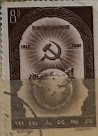
| SOURCE | TITLE| IMAGE MATCH | click to source page |
| www.ebay.com | 1957 P.R.China, 40th Anniversary October Revolution ... | 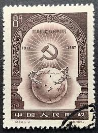 |
| findyourstampsvalue.com | 40th anniversary of Russian October Revolution: Hammer and ... | 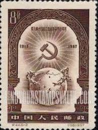 |
| www.tradera.com | Se produkter som liknar Kina 1957 - 8 fen. på Tradera ... | 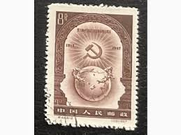 |
| margipood.ee | c-2 1957 - Margipood | 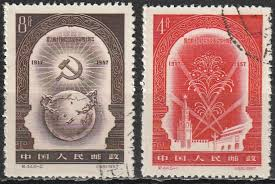 |
| www.facebook.com | 缘邮币stacy stamp - 缘邮币stacy stamp added a new photo. | 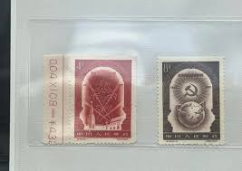 |
| www.reddit.com | Looking for a digitized version of the hands holding the ... | 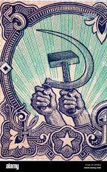 |
| fred-larucci.pixels.com | 1946 Russia - No.790 Canvas Print by Fred Larucci - Fred ... | 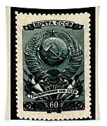 |
| www.reddit.com | Soviet Prussia or the United Socialist Council Republics of ... | 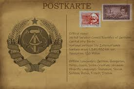 |
| home.nestor.minsk.by | Arms of Soviet Republics. | 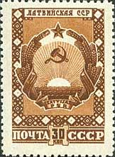 |
| en.wikipedia.org | File:Russia stamp 1946 СК639.png - Wikipedia | 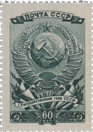 |
| www.cosmos.so | communism (@softtman) / Cosmos | 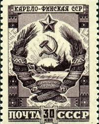 |
| ca.wikipedia.org | Fitxer:Stamp of USSR. Karelo-Finnish SSR 1947.jpg ... | 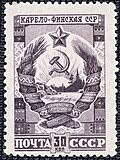 |
| www.stamprussia.com | Russian Topical Stamps: WORLD WAR II | 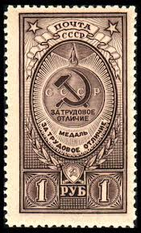 |
| filtorg.ru | Купить 3 почтовые марки «Выборы в Верховный Совет» СССР 1946 ... | 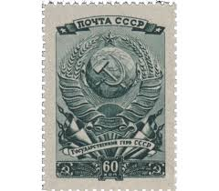 |
| en.wikipedia.org | Emblem of the Kazakh Soviet Socialist Republic - Wikipedia | 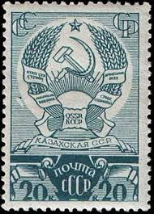 |
| itoldya420.getarchive.net | 9 Coats Of Arms Of The Uzbek Soviet Socialist Republic Image ... | 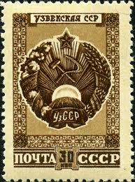 |
| www.dreamstime.com | Soviet State Emblem - Russia Stock Image - Image of history ... | 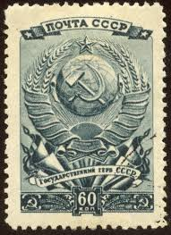 |
| www.ebay.com | RUSSIA,USSR:1947 SC#1118 Used Ukrainian SSR AR746 | eBay | 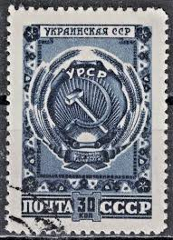 |
| jenikirbyhistory.getarchive.net | 8 Coats of arms of the moldavian soviet socialist republic ... | 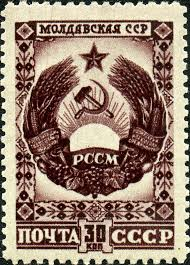 |
| www.stamprussia.com | Russian Mint Stamps of 1961-1965. Online Catalogue. | 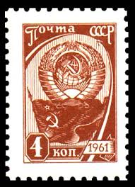 |
| picryl.com | The Soviet Union 1939 CPA 693 stamp (Miner), Soviet Union ... | 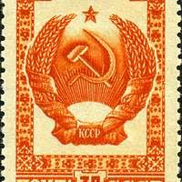 |
| www.cherrystoneauctions.com | U.S. & Worldwide; Vladivistok Collection of Russia; A ... | 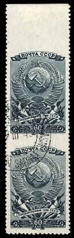 |
| www.stampsrussia.com | Stamps Russia 1946 : StampsRussia.com, Russian stamps at ... | 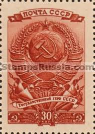 |
| russianphilately.com | The 1947 Soviet postage stamps for Sale | 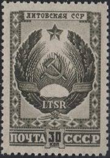 |
| stamps.ru | Медаль «За трудовое отличие» | Stamps.ru | 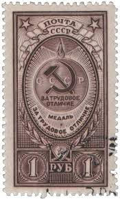 |
| en.wikipedia.org | Emblem of the Azerbaijan Soviet Socialist Republic - Wikipedia | 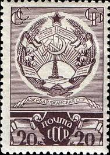 |
| www.stampsrussia.com | Stamps Russia 1947 : StampsRussia.com, Russian stamps at ... | 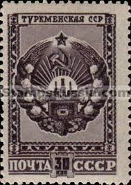 |
| www.shutterstock.com | Bulgaria Circa 1951 Hands Holding Hammer Stock Photo ... | 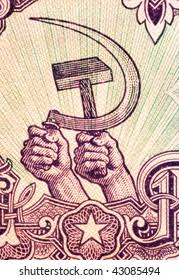 |
| commons.wikimedia.org | File:Stamp of USSR 1120.jpg - Wikimedia Commons | 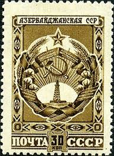 |
| www.flickr.com | Azerbaijan | Coat of arms of the Azerbaijan Soviet Socialist ... | 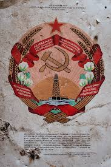 |
| soviet-art.ru | Soviet Art, USSR culture | 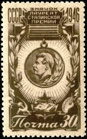 |
| www.ebay.com | Bulgaria USSR Russia Soviet Union paper money 1951 set of 7 ... | 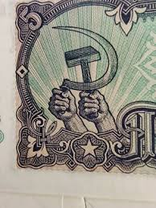 |
| kids.kiddle.co | State Emblem of the Soviet Union Facts for Kids | 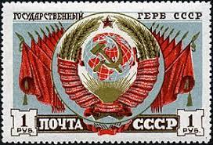 |
| en.wikipedia.org | Komi Autonomous Soviet Socialist Republic - Wikipedia | 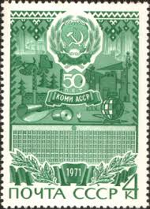 |
| en.wikipedia.org | Emblem of the Tajik Soviet Socialist Republic - Wikipedia | 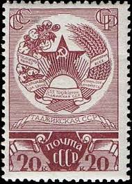 |
| uz.wikipedia.org | Fayl:Stamp of USSR 1119.jpg - Vikipediya | 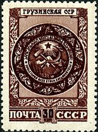 |
| en.wikipedia.org | Order of the Badge of Honour - Wikipedia | 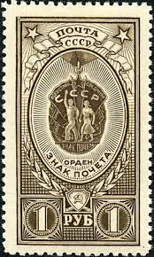 |
| www.stamprussia.com | Russian Used Stamps of 1941-1945. Online Catalogue. | 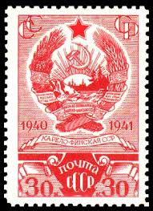 |
| vintagestockphotos.com | Free Vintage Stock Photo of Moscow State University - VSP | 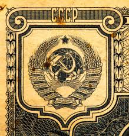 |
| en.wikipedia.org | Order of the Red Banner of Labour - Wikipedia | 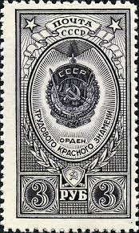 |
| www.facebook.com | The State emblem of the USSR. Approved by decree of the ... | 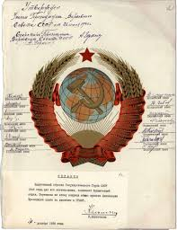 |
| en.numista.com | 2 Rubles - Russian Socialist Federative Soviet Republic ... | 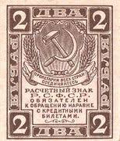 |
| www.stampsrussia.com | Stamps Russia 1949 : StampsRussia.com, Russian stamps at ... | 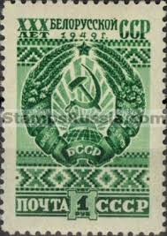 |
| www.mysticstamp.com | Worldwide - Europe - Russia & Soviet Union - Page 1 - Mystic ... | 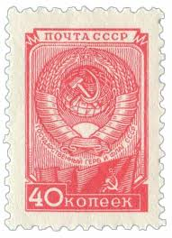 |
| www.ebay.com | PRC China Stamps:1957 40th Anniversary of Russian Revolution ... | 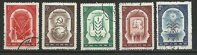 |
| en.wikipedia.org | Emblem of the Uzbek Soviet Socialist Republic - Wikipedia | 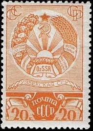 |
| www.wikiwand.com | Emblem of the Ukrainian Soviet Socialist Republic - Wikiwand | 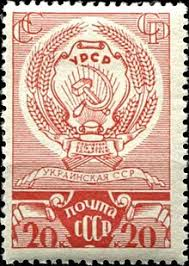 |
| ru.wikipedia.org | Файл:The Soviet Union 1941 CPA 801 stamp with 5 stripes ... | 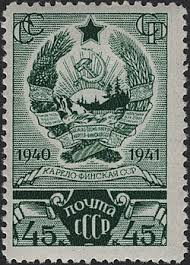 |
| bullionsharks.com | The First Soviet Currency - 1 Ruble Mini (C) - Bullion Shark | 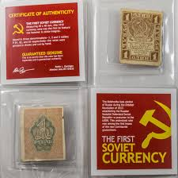 |
| picryl.com | Coat of arms of the Soviet Union (1956-1991 version ... | |
| www.etsy.com | Bulgaria Vintage 5 Leva Banknotes/set of 2/paper Money ... | |
| commons.wikimedia.org | File:Gerb SSSR pocht.JPG - Wikimedia Commons | |
| www.buyhungarianstamps.com | 4517-4528 Russia - Types of 1976 (MNH) – Eastern Europe ... | |
| www.xabusiness.com | C15 Scott 138-140 International Labour Day - China Stamps | |
| www.popastro.com | The Moon in Stamps - Lunar Section | |
| banknoteden.com | Russia – THE BANKNOTE DEN | |
| www.ebay.com | Russia Soviet Union Coat of Arms and Flag stamps 1957 MNH | eBay | |
| en.wikipedia.org | Emblem of the Georgian Soviet Socialist Republic - Wikipedia | |
| www.buyhungarianstamps.com | #3342-3357 Russia - 50th Anniv. of October Revolution (MNH ... | |
| www.posterplakat.com | PP 760 | Poster Plakat |
{kind=link}
{kind=link}
{kind=link}
{kind=link}
_1200dpi.jpg){kind=link}
{kind=link}